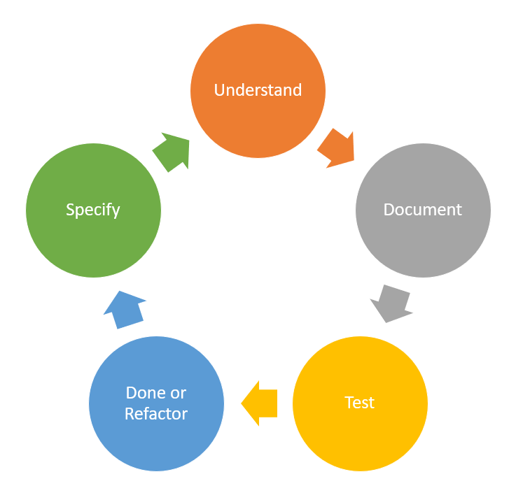

The Interface between Tech and non-Tech
When we have the conversations we need to document our findings, so we can all understand, then discuss, then decide, then write a unit test and finally validate.
Cucumber is the tool that supports Behaviour Driven Development (BDD) and Gherkin is it's language. Lets pretend we are discussing how a piece of software should behave when we enter scores for a student's exam results, and based on what the business user has told us we have come up with this test.
You can see the keyords, highlighted and in italics. Feature is the behaviour of the sofware we are testing. Scenario is the specific behaviour we want to test. Given is the state the software is in when we start the test, for example "logged in" or in this case, a score is entered. When describes an action to be carried out, in this case, press a button. Then describes what should now happen, in this case, display the grade.
There are other keywords And, But & Background, Examples that assist in writing more concise steps and scenarios.
Feature: Scores and Grades
Calculate the grade from an exam score
Scenario: Fail
Given: a score <49 is entered into the score section
When: the grade button is pressed
Then: "Fail" is displayed
Scenario: Pass
Given: a score ≥50 and ≤64 is entered into the score section
When: the grade button is pressed
Then: "Pass" is displayed
Scenario: Merit
Given: a score ≥65 and ≤79 is entered into the score section
When: the grade button is pressed
Then: "Merit" is displayed
Scenario: Distinction
Given: a score ≥80 and ≤100 is entered into the score section
When: the grade button is pressed
Then: "Distinction" is displayed
That's fine for a first draft, but after discussing further and understading we can write one test to cover all these scenarios using the Examples feature. Also, our test covers all the partitions and boundaries of the exam grade rules. The partions are 0 to 49, 50 to 64, 65 to 79 and 80 to 100. The boundaries are 50, 65 and 80. So we'll mention these values in the test.
Feature: Scores and Grades
Calculate the grade from an exam score
The rules are:
For score less than 50 a fail, 50 to 64 a Pass, 65 to 79 a Merit and 80 to 100 a distinction.
Using values 49, 50, 64, 65, 79, 80 will test all partitions and boundaries.
Scenario Outline: Grades are calculated from the score
Given: <score> is entered into the score section
When: the grade button is pressed
Then: <award> is displayed
Examples:
∣score ∣award ∣
∣49 ∣Pass ∣
∣50 ∣Pass ∣
∣64 ∣Merit ∣
∣65 ∣Merit ∣
∣79 ∣Distinction∣
∣80 ∣Distinction∣
So using the Examples and Scenario outline we have made a more readable test. We have now documented the requirements of this feature and anybody can easliy read and understand the requiremnets. When we run this feature file it produces a report, we can use the reports to build up a library of features, requirements and tests which are easliy understandable and can be used by anybody to check or test the software.
See the report here (opens in a new window).